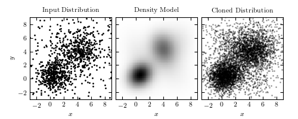

Cloning a Distribution with Gaussian Mixtures¶
Figure 6.10
Cloning a two-dimensional distribution. The left panel shows 1000 observed points. The center panel shows a ten-component Gaussian mixture model fit to the data (two components dominate over other eight). The third panel shows 5000 points drawn from the model in the second panel.
{kind=link}
# Author: Jake VanderPlas
# License: BSD
# The figure produced by this code is published in the textbook
# "Statistics, Data Mining, and Machine Learning in Astronomy" (2013)
# For more information, see http://astroML.github.com
# To report a bug or issue, use the following forum:
# https://groups.google.com/forum/#!forum/astroml-general
import numpy as np
from matplotlib import pyplot as plt
from sklearn.mixture import GMM
#----------------------------------------------------------------------
# This function adjusts matplotlib settings for a uniform feel in the textbook.
# Note that with usetex=True, fonts are rendered with LaTeX. This may
# result in an error if LaTeX is not installed on your system. In that case,
# you can set usetex to False.
from astroML.plotting import setup_text_plots
setup_text_plots(fontsize=8, usetex=True)
#------------------------------------------------------------
# Create our data: two overlapping gaussian clumps,
# in a uniform background
np.random.seed(1)
X = np.concatenate([np.random.normal(0, 1, (200, 2)),
np.random.normal(1, 1, (200, 2)),
np.random.normal(4, 1.5, (400, 2)),
9 - 12 * np.random.random((200, 2))])
#------------------------------------------------------------
# Use a GMM to model the density and clone the points
gmm = GMM(5, 'full').fit(X)
X_new = gmm.sample(5000)
xmin = -3
xmax = 9
Xgrid = np.meshgrid(np.linspace(xmin, xmax, 50),
np.linspace(xmin, xmax, 50))
Xgrid = np.array(Xgrid).reshape(2, -1).T
dens = np.exp(gmm.score(Xgrid)).reshape((50, 50))
#------------------------------------------------------------
# Plot the results
fig = plt.figure(figsize=(5, 2))
fig.subplots_adjust(left=0.1, right=0.95, wspace=0.05,
bottom=0.12, top=0.9)
# first plot the input
ax = fig.add_subplot(131, aspect='equal')
ax.plot(X[:, 0], X[:, 1], '.k', ms=2)
ax.set_title("Input Distribution")
ax.set_ylabel('$y$')
# next plot the gmm fit
ax = fig.add_subplot(132, aspect='equal')
ax.imshow(dens.T, origin='lower', extent=[xmin, xmax, xmin, xmax],
cmap=plt.cm.binary)
ax.set_title("Density Model")
ax.yaxis.set_major_formatter(plt.NullFormatter())
# next plot the cloned distribution
ax = fig.add_subplot(133, aspect='equal')
ax.plot(X_new[:, 0], X_new[:, 1], '.k', alpha=0.3, ms=2)
ax.set_title("Cloned Distribution")
ax.yaxis.set_major_formatter(plt.NullFormatter())
for ax in fig.axes:
ax.set_xlim(xmin, xmax)
ax.set_ylim(xmin, xmax)
ax.set_xlabel('$x$')
plt.show()